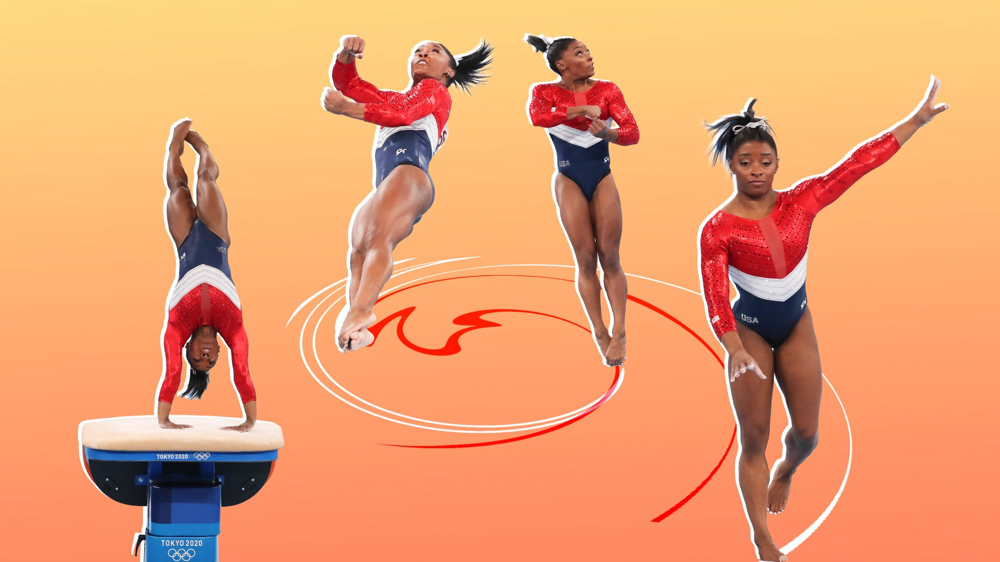
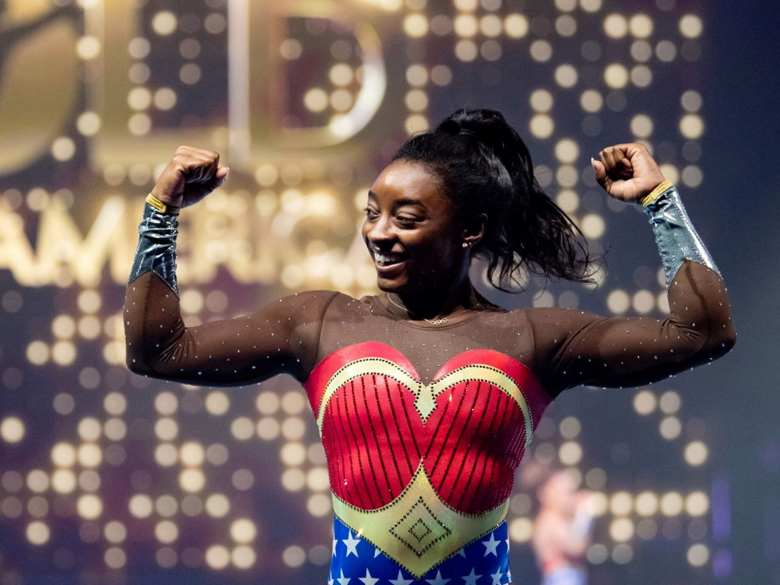

Simone Biles walked away from the Tokyo Olympics with her head unbowed and her illustrious gymnastic career cemented.
The superstar left on her terms, after stepping away during the competition to focus on her mental health.
Although she is leaving the door open for a 2024 return, if Tokyo was her curtain call, then the questions turn to what is her legacy and what does the sport’s most recognizable gymnast do for a second act?
Experts say Biles, who is tied for the Olympic record for most medals won by an American gymnast, will transcend the sport, pushing for mental health and wellness, and ushering it past the last remnants of its darkest period — the Larry Nassar scandal.
Nassar, the USA Gymnastics team’s former doctor, was accused of sexually assaulting more than 120 girls. He pleaded guilty to sexually abusing 10 minors in Michigan court in 2018 and is serving up to 175 years in prison.
Biles, who said she is a survivor of Nassar’s abuse, has spoken out in the past about how it affected her, and said that her Olympics performance was “probably” affected by it.
She now has the opportunity to continue speaking out against sexual assault and promoting any other social banners she chooses to carry.
“I would say Simone’s legacy is actually far greater reaching than medal count, and her beginning to help facilitate the change of culture in our sport,” said Bob Neat, director of communications for the National Gymnastics Association.
He said Biles, who has 32 Olympic and world medals, will represent a shift toward advocating for more safety and better treatment of athletes and coaches.
Neat predicted she’ll become more outspoken and take on a bigger stage
.In Tokyo, Biles withdrew from the team all-around, the individual all-around, the vault, floor exercise and uneven bar events after struggling early on.
She cited the mental and emotional toll of competing in the Games as reasons for backing out.
-Derrin Moore, founder of the Atlanta-based advocacy group Brown Girls Do Gymnastic
"Physically, I feel good. I'm in shape," she told Hoda Kotb on NBC's "TODAY" show following her exit. "Emotionally, it varies on the time and moment. Coming to the Olympics and being head star isn't an easy feat."
Her decision drew harsh criticism from many who said she had quit on her team, and praise from mental health supporters who backed Biles, the most decorated gymnast in history, for knowing when to take time for herself.
Biles, a Black woman dominating a majority white sport, said she felt a lot of pressure heading into the international competition.
It’s “like the weight of the world on your shoulders," she said. It’s a "little bit too heavy to carry," but it helps to take a step back and focus on her mental health, she said.
At the time, the Olympian said she was dealing with the “twisties,” a phenomenon that can cause potential injury when gymnasts lose their sense of space and dimension midair — even if they have performed the same maneuver for years without problems.
Derrin Moore, founder of the Atlanta-based advocacy group Brown Girls Do Gymnastics, said Biles’ legacy will forever be tied to her decision in Tokyo.
“I feel before, her legacy was going to be about her ability and skill and showing brown girls you can be who you want to be,” Moore said. “But now that she bowed out of a lot of the Olympics, I think her legacy will be around mental health. As tough as she is, and as talented as she is, she still knew when she needed to take a break. I think that’s huge for her.”
Biles wasn’t afraid to push the envelope or be the greatest gymnast, which opens the door for more Black and brown girls to follow in her footsteps, she said.
Biles’ influence on the sport will likely grow through World Champions Centre, the Houston-area training facility her parents founded, where she will most likely mold the next wave of world-class gymnasts.
Stephanie Allmon Merry | Culture Map Forth Worth
“Simone was one of the first people to open up a gym and coach the kids the way she wanted to be coached. Simone was always talented, but she always wanted to do more,” said Ashley Umberger, a 2001 USA national team gymnastics member.
Biles can lean on her experience to train future Olympic gymnasts, she said.
“You understand the training and mentality because you were the athlete. And once the athlete becomes the coach, it’s like another realm,” Umberger, who owns North Stars Gymnastics in New Jersey, said. “She’s going to have the feel of going to the Olympics, she’s going to have the experience of what it’s like to be an Olympic champion and what it feels like to make a mistake and come back.”
World Champions Centre has already had big successes.
Olympic gymnast Jordan Chiles, who nearly quit the sport before starting her training there in 2018, was Biles’ last-minute replacement this year, helping Team USA win a silver medal.
“I lived in a world where everything [was] strict, strict, strict,” Chiles told NBC Sports in May. “They’ve (World Champions) given me so much encouragement. I didn’t get that too much in the past.”
Chiles then credited Biles with bringing about a culture change.
-Ashley Umberger, a 2001 USA national team gymnastics member
“The fact that the gym is Black-owned makes it a beacon for Black elite gymnasts,” Moore said. “That’s not by happenstance. That’s a Simone thing. It’s going to become the blueprint.”
As great of an athlete as Biles is, some believe her spotlight may dim a little in the years ahead.
“There’s always somebody new that’s going to come and maybe make new achievements,” said Tori Ford, a women’s gymnastics coach at Discover Gymnastics in Houston. “She won’t be forgotten about all the way.”
It wouldn’t be the first time a well-known Olympic gymnast has faded. Dominique Dawes and Shannon Miller, who both won gold medals as part of the 1996 “Magnificent Seven” team, were once household names who aren’t in the public eye as much anymore.
“I don’t think it’s possible to forget Simone Biles,” Umberger said.
Neat reiterated that Biles’ impact will eventually surpass her accomplishments and steering the next generation of athletes.
“Her role isn’t going to be just coaching in the gym, but leading a cultural shift of protecting the wellness of athletes and coaches. Her biggest role coming out of the Olympic Games is helping to shift the culture. That’s her legacy. She is the person to do it. She is the individual that understands it better than anybody.”